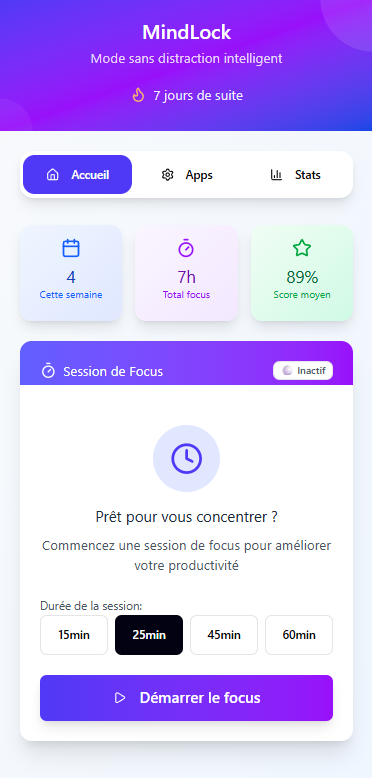
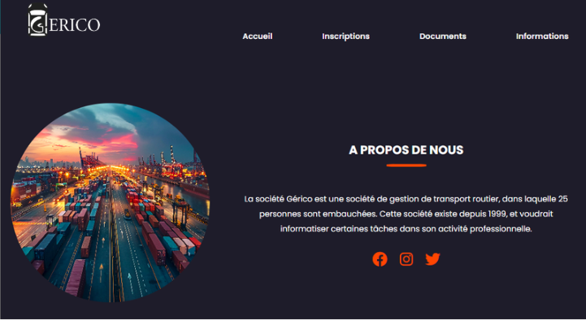

Projets et expériences
Une vue d'ensemble de mes projets académiques, de mes expériences professionnelles et de mon parcours en data.
Projets académiques

MindLock
Application de productivité qui combine un blocage d'application intelligent avec des défis d'apprentissage (QCM et exercices logiques) pour favoriser la concentration et l'apprentissage.

Gestion Fiches de Paie & Congés
Site web sécurisé de gestion RH permettant aux employés de consulter et télécharger leurs fiches de paie, ainsi que gérer leurs demandes de congés avec gestion automatique des jours fériés et week-ends.
Expériences professionnelles
Data Analyst
- Extraction, nettoyage et transformation de données d'exploitation via Power Query et DAX.
- Fusion de plus de 270 fichiers CSV issus de trois périmètres distincts.
- Conception d'un tableau de bord Power BI sur la volatilité des effectifs.
- Développement d'un dashboard de catégorisation des appels téléphoniques.
Power BI Power Query DAX
Développement web
- Amélioration de l'interface visuelle du site Amiens.fr.
- Intégration numérique des éléments du Journal des Amiénois (JDA) dans le site.
HTML CSS Intégration
Assistant administratif
- Déploiement d'un logiciel de suivi technique : création des accès, formation des collaborateurs et note de présentation.
- Phoning, prise de rendez-vous, gestion des réclamations et suivi de relogements via logiciel interne.
Organisation Communication Suivi
Formation
Cycle ingénieur - Data & IA
- Admis pour la rentrée 2026.
BUT Informatique
- Parcours Data & Exploitation des Données.
Licence Maths-Informatique
- Baccalauréat général spécialités mathématiques et physique-chimie, Lycée Jean-Monnet, Crépy-en-Valois • mai 2022.
Vous avez un besoin en data ou en web ?
Je suis disponible pour discuter d'une alternance à partir de fin août 2026.
Me contacter